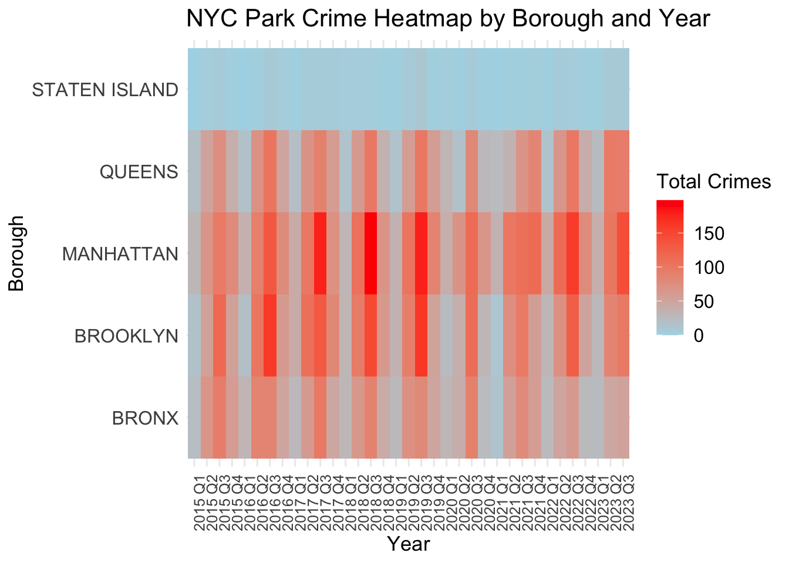
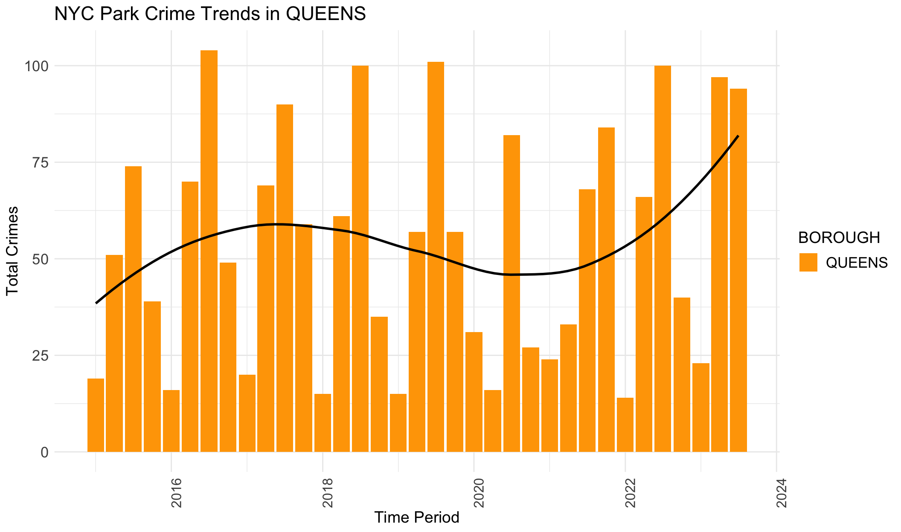
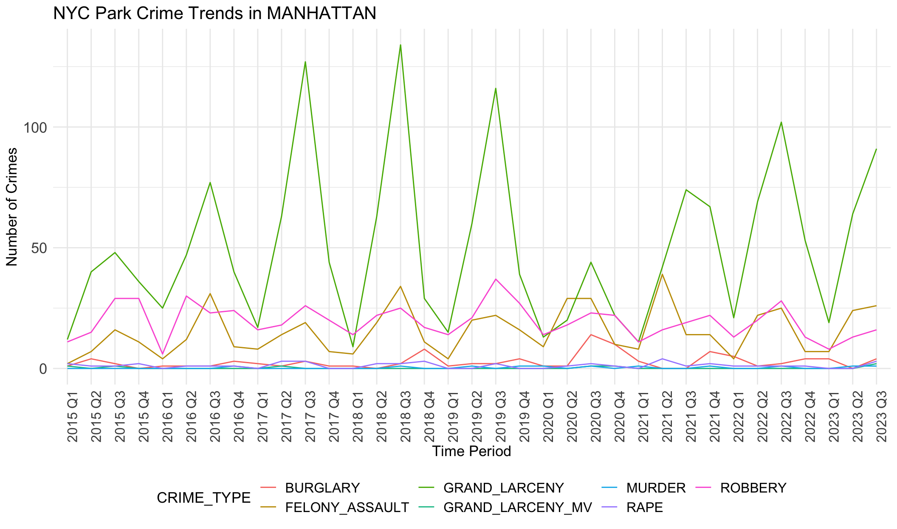
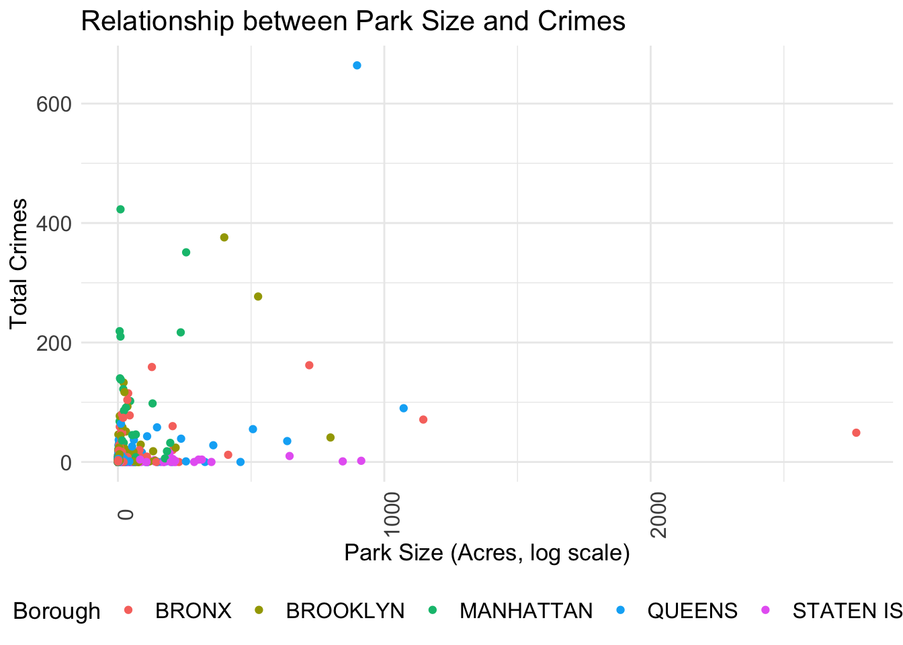

We first get an idea of the total crime distribution in NYC boroughs.
Code
library(readxl)library(dplyr)
Attaching package: 'dplyr'
The following objects are masked from 'package:stats':
filter, lag
The following objects are masked from 'package:base':
intersect, setdiff, setequal, union
Code
library(ggplot2)library(tidyr)
Warning: package 'tidyr' was built under R version 4.1.2
Code
library(lubridate)
Warning: package 'lubridate' was built under R version 4.1.2
Attaching package: 'lubridate'
The following objects are masked from 'package:base':
date, intersect, setdiff, union
Code
# Initializes an empty data frame to store data for all quartersall_data <-data.frame()for (year in2015:2023) {for (quarter in1:4) {# Skip Q4 2023if (year ==2023&& quarter ==4) {next } file_path <-sprintf("~/Desktop/crime_data/nyc-park-crime-stats-q%d-%d.xlsx", quarter, year) temp_data <-read_excel(file_path, skip =2) # Uniform column namecolnames(temp_data) <-c("PARK", "BOROUGH", "SIZE_ACRES", "CATEGORY", "MURDER", "RAPE", "ROBBERY", "FELONY_ASSAULT", "BURGLARY", "GRAND_LARCENY", "GRAND_LARCENY_MV", "TOTAL")# Add a time period column temp_data$Time_Period <-sprintf("%d Q%d", year, quarter)# Merge into the master data framework all_data <-rbind(all_data, temp_data) all_data <- all_data[all_data$BOROUGH !="BOROUGH", ] all_data <- all_data[all_data$BOROUGH !="BROOKLYN/QUEENS", ] }}
New names:
New names:
New names:
New names:
New names:
New names:
New names:
New names:
New names:
New names:
New names:
New names:
New names:
New names:
New names:
New names:
New names:
New names:
New names:
New names:
New names:
New names:
New names:
New names:
New names:
New names:
New names:
New names:
New names:
New names:
New names:
New names:
New names:
New names:
New names:
• `` -> `...2`
• `` -> `...3`
• `` -> `...4`
• `` -> `...5`
• `` -> `...6`
• `` -> `...7`
• `` -> `...8`
• `` -> `...9`
• `` -> `...10`
• `` -> `...11`
• `` -> `...12`
Code
# Calculate the total number of crimes for each quarter and boroughcrime_stats <- all_data %>%filter(!is.na(BOROUGH)) %>%# Exclude the rows where BOROUGH shows NAgroup_by(Time_Period, BOROUGH) %>%summarize(Total_Crimes =sum(as.numeric(TOTAL), na.rm =TRUE))
`summarise()` has grouped output by 'Time_Period'. You can override using the
`.groups` argument.
Code
custom_colors <-c("orange", "skyblue","pink", "#4DAF4A", "purple")# draw time series plotggplot(crime_stats, aes(x = Time_Period, y = Total_Crimes, fill = BOROUGH)) +geom_bar(stat="identity", position =position_dodge()) +theme_minimal() +scale_fill_manual(values = custom_colors) +labs(title="NYC Park Crime Trends by Borough", x="Time Period", y="Total Crimes") +theme(axis.text.x =element_text(angle =90))
This plot shows trends of total crimes by borough in different NYC boroughs. The crime data is from 2015 Spring to 2023 Autumn.
Generally, MANHATTAN and BROOKLYN have the most total crimes. This may result from their large populations and high densities of population. In contrast, STATEN ISLAND has the least total crimes for similar potential reasons. This may be also related to population characteristics of residence (income, races..).
We also notice that crimes happen more in Q3 (the third quarter) each year. There are increasing trends from 2015 to 2019 and plummets from 2020 to 2021. The cause may be the pandemic, when lockdown and disease happened more often.
3.2 Heatmap of Total Crimes
Heatmap based on quarters and boroughs shows directly the seasonal patterns and densities of crimes.
Code
ggplot(crime_stats, aes(x = Time_Period, y = BOROUGH, fill = Total_Crimes)) +geom_tile() +scale_fill_gradient(low ="lightblue", high ="red") +theme_minimal() +labs(title ="NYC Park Crime Heatmap by Borough and Year",x ="Year",y ="Borough",fill ="Total Crimes") +theme(axis.text.x =element_text(angle =90))

There appears to be a recurring pattern within each year, suggesting a seasonal trend in crime numbers. For instance, the third quarters consistently show higher crime rates across multiple years. This may result from the weather and temperature. It seems crimes seldom take place in winter, but more in autumn.
Some years stand out with overall higher crime rates across all boroughs, including 2017, 2018, 2019 and 2022. This could be indicative of broader societal factors affecting crime rates, such as economic downturns or changes in policing policy.
The intensity of colors varies across boroughs, indicating that some areas consistently experience higher crime rates than others. For example, MANHATTAN and BROOKLYN show more intense colors compared to STATEN ISLAND. Although STATEN ISLAND reports few crimes, we can still see light strips in the heatmap which indicate seasonal trends of crimes. This is hard to capture in the previous bar chart.
3.3 Trends in Total Crimes
To see the trends more clearly for boroughs, we draw separate bar charts with LOESS smoothing lines to illustrate the trends.
Code
# Function: Converts a string in the format "2019 Q1" to a dateconvert_to_date <-function(time_period) { parts <-strsplit(time_period, " ")[[1]] year <- parts[1] quarter <-substr(parts[2], 2, 2) month <-match(quarter, c("1", "2", "3", "4")) *3-2as.Date(paste(year, sprintf("%02d", month), "01", sep ="-"))}crime_stats$Time_Period <-sapply(crime_stats$Time_Period, convert_to_date)
Code
# Plot the time series for each borough and add a LOESS smoothing lineboroughs <-unique(crime_stats$BOROUGH)for (borough in boroughs) { borough_data <-filter(crime_stats, BOROUGH == borough) p <-ggplot(borough_data, aes(x = Time_Period, y = Total_Crimes)) +geom_bar(stat ="identity", position =position_dodge(), aes(fill = BOROUGH)) +geom_smooth(method ="loess", se =FALSE, linetype ='solid', size =1, color ="black") +scale_fill_manual(values = custom_colors) +theme_minimal() +labs(title =paste("NYC Park Crime Trends in", borough),x ="Time Period",y ="Total Crimes") +theme(axis.text.x =element_text(angle =90))print(p)}
Warning: Using `size` aesthetic for lines was deprecated in ggplot2 3.4.0.
ℹ Please use `linewidth` instead.
`geom_smooth()` using formula = 'y ~ x'
`geom_smooth()` using formula = 'y ~ x'
`geom_smooth()` using formula = 'y ~ x'
`geom_smooth()` using formula = 'y ~ x'

`geom_smooth()` using formula = 'y ~ x'
The general trends for BROOKLYN, MANHATTAN, QUEENS and STATEN ISLAND are similar. They all show an increasing trend from 2015 to 2019, and then crime numbers dropped during the pandemic. In the end, crime data again increase, with a tendency to surpass the previous crime records. However, it’s different for BRONX. The crimes start decreasing before the pandemic, and then decline gradually and slowly. This trend in BRONX is clear in this plot, but not apparent in the previous section.
3.4 NYC Park Crime by Crime Categories
Here we look into crime details for different boroughs. We focus on the crime categories.
`summarise()` has grouped output by 'Time_Period', 'BOROUGH'. You can override
using the `.groups` argument.
Code
# Generate a line chart for each boroughboroughs <-unique(crime_type_stats$BOROUGH)for (borough in boroughs) { borough_data <-filter(crime_type_stats, BOROUGH == borough) p <-ggplot(borough_data, aes(x = Time_Period, y = Total_Crimes, color = CRIME_TYPE, group = CRIME_TYPE)) +geom_line() +theme_minimal() +labs(title =paste("NYC Park Crime Trends in", borough), x ="Time Period", y ="Number of Crimes") +theme(axis.text.x =element_text(angle =90), legend.position ="bottom")print(p)}

Generally, robbery, felony assault and grand larceny are three common crime categories in all boroughs. Crime numbers of these three types are much higher than other crime types. Other crimes like rape rarely happen, less than 5 per quarter.
We notice there are obvious differences in boroughs. In BRONX, robbery is always the most common crime except the year 2020. However, grand larceny is the most common crime in BROOKLYN, MANHATTAN and QUEENS. This may be related to population density, tourist activity and commercial activity in these areas. STATEN ISLAND does not show any trend or dominant crime types, different from other boroughs. This aligns with the small crime numbers in STATE ISLAND. It seems that STATEN ISLAND is relatively safer than other boroughs.
These observed crime patterns may be influenced by different socio-economic conditions across regions, such as poverty levels, unemployment rates, education levels, and community resources.
`summarise()` has grouped output by 'PARK'. You can override using the
`.groups` argument.
Code
# Create the scatterplotggplot(park_crime_stats, aes(x = Park_Size, y = Total_Crimes, color = BOROUGH)) +geom_point() +#scale_x_log10() + # Logarithmic scale for park sizetheme_minimal() +labs(title ="Relationship between Park Size, Crime, and Borough",x ="Park Size (Acres, log scale)",y ="Total Crimes",color ="Borough" ) +theme(legend.position ="bottom")

Outliers make this plot unclear. The majority of data points stack together. We will remove the outliers.
Code
# Coomputer IQRiqr_stats <- park_crime_stats %>%summarize(Q1 =quantile(Total_Crimes, 0.25, na.rm =TRUE),Q3 =quantile(Total_Crimes, 0.75, na.rm =TRUE) ) %>%mutate(IQR = Q3 - Q1)# Define ranges for outlierslower_bound <- iqr_stats$Q1 -1.5* iqr_stats$IQRupper_bound <- iqr_stats$Q3 +1.5* iqr_stats$IQR# Filter out outlierspark_crime_stats_filtered <- park_crime_stats %>%filter(Total_Crimes >= lower_bound & Total_Crimes <= upper_bound)# Create the scatterplot againggplot(park_crime_stats_filtered, aes(x = Park_Size, y = Total_Crimes, color = BOROUGH)) +geom_point() +theme_minimal() +labs(title ="Relationship between Park Size, Crime, and Borough (Outliers Removed)",x ="Park Size (Acres)",y ="Total Crimes",color ="Borough" ) +theme(legend.position ="bottom")
There’s a dense cluster of points near the origin, indicating that smaller parks tend to have lower counts of total crimes. This could suggest that park size is a factor in crime occurrence, with smaller parks offering fewer opportunities for crime. However, There is no distinct upward trend line that would indicate a clear positive correlation between park size and crime rates.
Crime data have different distributions based on boroughs. It’s noticeable that certain boroughs like MANHATTAN and BROOKLYN have points that lie closly on the y-axis (total crimes), indicating these boroughs have higher crime rates. STATEN ISLAND tends to have much lower crime rates no matter what the park size is. This also verifies STATEN ISLAND is safter than other boroughs.
3.6 Link Between Unemployment and NYC Park Crime
It is commonly assumed that higher unemployment leads to higher crime rates. There are some reasons. For example, unemployment can lead to financial hardship, increasing the likelihood of engaging in criminal activities as a means of survival or income generation. With more people unemployed, there is a higher likelihood that some individuals will turn to crime, given the increased opportunities and time available.
However, there exist other relationships. For example, the level of unemployment is expected to be negatively associated with fluctuations in crime rates. It might suggest that the factors leading to changes in unemployment rates (such as economic conditions, policy changes, or labor market dynamics) could also be influencing crime rates in the opposite direction. In a booming economy, unemployment might decrease, but the increased activity and wealth might lead to more opportunities for certain types of crime (like theft or fraud). It could also imply that the relationship between unemployment and crime is not straightforward or direct and might be influenced by other mediating factors.
We will investigate the link between unemlpoyment and NYC park crimes here. We first illustrate the unemployment rate alongside the timeline and draw a LOESS smoothing line to see the trend.
`geom_smooth()` using method = 'loess' and formula = 'y ~ x'
It is obvious that the unemployment rate decreases from 2013 to 2018, increases from 2019 to 2021 (pandemic), and decreases from 2021. In general, the unemployment rate and the number of total park crimes have the opposite trend.
it’s worth noting that unemployment rate does not show seasonal differences, while park crimes happen more in autumn and less in winter. This may be caused by the characteristics of parks. Parks are known to be open and outdoor.